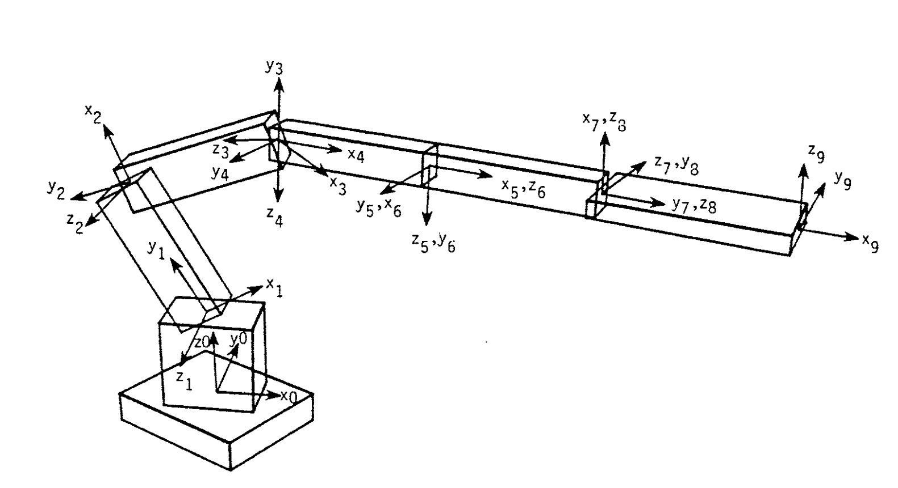
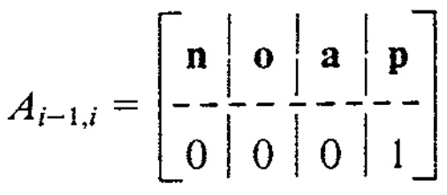
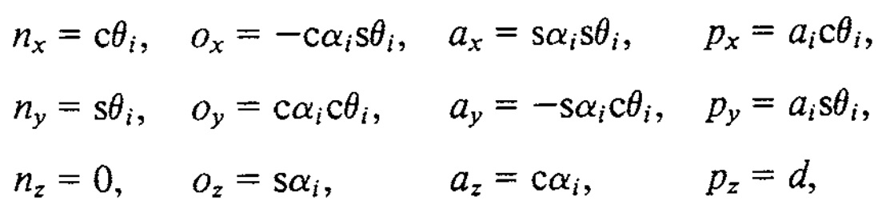
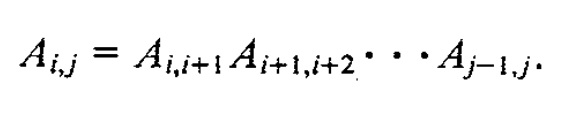
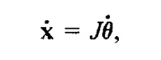
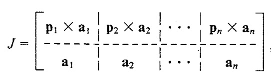

Kinematics - Paint Car Door
Date: Fall 2016 | Category: ECE 455 | Affiliation: Colorado State University
MATLAB Script to generate the joint angles required to move a planar, n-link robot so the robot's hand follows a specified trajectory. Simulate articulated motion.
Dependencies:


Media
Project Details
This was my final project for Prof. Anthony A. Maciejewski's class ECE 455 - Introduction to Robot Programming and Simulation . We were provided a file that contains the robot joint variable positions and velocities at key frames. From this file we had to generate the values of the joint variables of an n-joint manipulator for each frame. We used Catmull-Rom spline interpolation to generate smooth joint trajectories between each key frame, keeping in mind to step along the curves using appropriate u-values to generate the joint positions for each of the total frames to be displayed.
Once we were satisfied by the smooth motion, we had to generate the joint angles required to move a planar, n-link robot so the robot's hand follows a specified trajectory. Generating the joint angles required us to calculate Jacobians and perform both forward and inverse kinematics. A subset of the Denavit-Hartenberg parameters for the robot arm in its initial configuration was provided. Using forward kinematics and the initial robot configuration described by arm, determine the location of the end effector at t = 0 using forward kinematics. We compared the actual end-effector location to the desired location as specified in trajectory to generate a position error.
The next task was to reduce the position error by determining the joint angles required to reach the desired position, i.e, perform inverse kinematics. We used the Damped Least Squares (DLS) technique which is iterative. Within the DLS loop, we first needed to form the Jacobian of the end-effector for the current robot configuration. Using the Jacobian and given value of lambda;, we performed DLS to calculate the change in joint angles, which are added to the initial angle values. We determine the robot's end-effector position using the updated angle values and repeat the angle update until the position error is satisfactorily small, or we are unable to get any closer to the specified point (i.e. the desired trajectory may not be within the robot's reachable workspace).

Figure 1. Block diagram illustrating the relationship between individual degrees of freedom for the DH parameters
Articulated Objects
Given the above specification of coordinate frames, the relationship between adjacent coordinate frames is given by a rotation of theta, followed by translations of d and a, and a final rotation of alpha. By concatenating these transformations, it can be shown [17] that the relationship between adjacent coordinate frames i-I and i denoted by Aj-I,i is given by the homogeneous transformation as follows:

where

with sand c denoting the sine and cosine functions, respectively. In this derivation of the homogeneous transformation, the independent variable is 0 for rotary joints and d for prismatic joints. By multiplying adjacent link transformations, the homogeneous transformation between any two coordinate systems i and j is computed by using:

Jacobians
Essential to this concept of resolved motion rate control is the Jacobian. The Jacobian matrix J relates the motion of a reference coordinate frame attached to the articulated object to the joint variable velocities through the equation

where x is typically a six-dimensional vector describing the desired translational and rotational motion of a point on the object (e.g. motion of a hand) and iJ is an n-dimensional vector representing the joint velocities, n being the number of degrees of freedom in the articulated object. While a number of techniques for calculating the Jacobian have been studied, a particularly elegant and efficient method is available if the desired motion, X, is described in terms of the screw axis variables W and J.L .When described in terms of these variables, it can be shown that the Jacobian is given by

The objective of defining a smooth linear transformation between the two sets of variables, the functional set of joint variables describing the degrees of freedom in the object and the convenient task-oriented set of variables which the user specifies, is thus achieved by the Jacobian. In this manner SAM avoids the cumbersome nonlinear relationship between position specification of the two sets of variables. It is clear from above equation that the desired motion specified by the user, X, can be achieved by applying the joint velocities specified by

if J is square and non-singular. For the vast majority of cases, however, the number of degrees of freedom will not match the dimension of the specified velocity. Then, we find the pseudoinverse of the non-square matrix.